Philadelphia Travel Guide
Sixth-most populous city in the US and second-most populous city in the Northeastern US played an instrumental role in the American Revolution as a meeting place for the Founding Fathers, who signed the Declaration of Independence and the Constitution
Top Locations
Places to See in Philadelphia

Kevin Burkett from Philadelphia, Pa., USA, CC BY-SA 2.0, via Wikimedia Commons; Image Size Adjusted

African American Museum in Philadelphia
Museum dedicated to preserving and interpreting African American history, culture, and contributions through art exhibitions, historical collections, educational programs, and community storytelling.
Kevin Burkett from Philadelphia, Pa., USA, CC BY-SA 2.0, via Wikimedia Commons; Image Size Adjusted
Benjamin Franklin Bridge
Suspension bridge across the Delaware River connecting Philadelphia, and Camden, New Jersey with pedestrian walkways running along both sides of the bridge
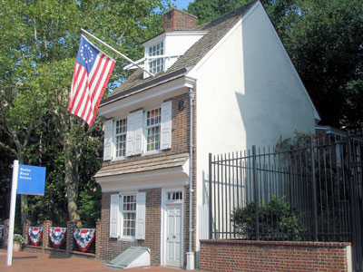
Coolcaesar at the English Wikipedia, CC BY-SA 3.0, via Wikimedia Commons; Image Size Adjusted

Betsy Ross House
Landmark purported to be the site where the seamstress and flag-maker Betsy Ross (1752-1836) lived when she is said to have sewed the first American Flag
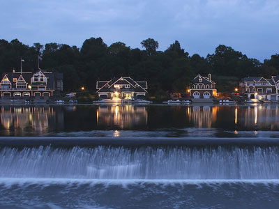
Dough4872; modifications and annotations by Maps and stuff (Brian W. Schaller), CC BY-SA 4.0, via Wikimedia Commons; Image Size Adjusted
.jpg){kind=link}
Boathouse Row
Historic site located on the east bank of the Schuylkill River consisting of a row of 15 boathouses housing social and rowing clubs and their racing shells
Dough4872; modifications and annotations by Maps and stuff (Brian W. Schaller), CC BY-SA 4.0, via Wikimedia Commons; Image Size Adjusted
Carpenter's Hall
Eighteenth-century meeting hall showcasing original Georgian architecture, historic exhibits, and the birthplace of important events that helped shape the founding of the United States.
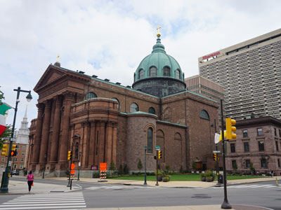
Michael Barera, CC BY-SA 4.0, via Wikimedia Commons; Image Size Adjusted
.jpg){kind=link}
Cathedral Basilica of Saints Peter and Paul
Cathedral is the largest Catholic church in Pennsylvania and is the largest brownstone structure and one of the most architecturally notable structures in Philadelphia
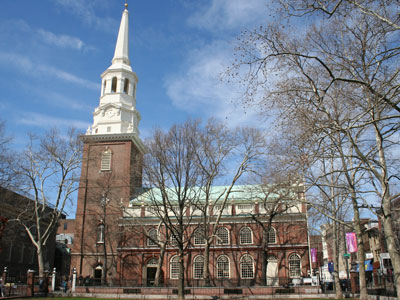
PVSBond at English Wikipedia, CC BY-SA 3.0, via Wikimedia Commons; Image Size Adjusted

Christ Church Philadelphia
Church in the Old City neighborhood played an integral role in the founding of the Protestant Episcopal Church in the United States
Christ Church Burial Ground
Important early-American cemetery known for the final resting place of Benjamin Franklin, his wife, and four other signers of the Declaration of Independence

Camila Pereira, CC BY-SA 4.0, via Wikimedia Commons; Image Size Adjusted

Cliveden of the National Trust
Historic Georgian mansion and museum preserving Revolutionary War history, colonial architecture, and the stories of the families, soldiers, and enslaved people connected to the property over more than two centuries.
Camila Pereira, CC BY-SA 4.0, via Wikimedia Commons; Image Size Adjusted
Eastern State Penitentiary
Former American prison where notorious criminals such as Al Capone and bank robber Willie Sutton were held
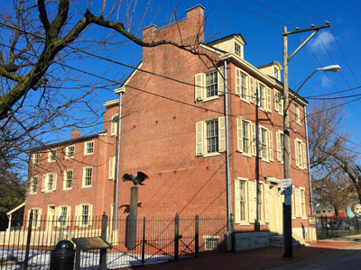
English: Victoria Stauffenberg, Public domain, via Wikimedia Commons; Image Size Adjusted
.jpg){kind=link}
Edage Allen Poe National Historic Site
Preserved home once rented by American author Edgar Allan Poe

User:BenFranske, CC BY-SA 4.0, via Wikimedia Commons; Image Size Adjusted

Elfreths Alley
Historic street, dating back to 1703, known for its Georgian and Federal-style houses and cobblestone pavement
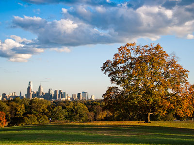
Frederikto, CC BY-SA 3.0, via Wikimedia Commons; Image Size Adjusted

Fairmount Park
Largest municipal park in Philadelphia, and the historic name for a group of parks located throughout the city
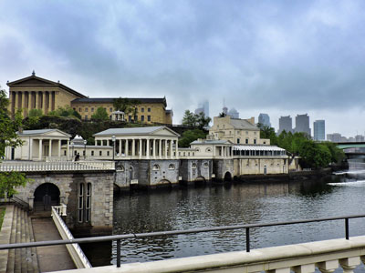
Goldpanda94, CC BY-SA 4.0, via Wikimedia Commons; Image Size Adjusted

Fairmount Water Works
Municipal waterworks nown for its architecture and its engineering innovations, it now houses a restaurant and an interpretive center that explains the waterworks' purpose and local watershed history

Phil Roeder, CC BY 2.0, via Wikimedia Commons; Image Size Adjusted

Fort Mifflin
Historic stone-and-earth fortification featuring bastions, casemates, river defenses, and preserved military structures used across multiple American conflicts.
Phil Roeder, CC BY 2.0, via Wikimedia Commons; Image Size Adjusted
Gloria Dei Old Swedes Episcopal Church
Historic seventeenth-century church featuring preserved colonial architecture, centuries of religious heritage, burial grounds, and exhibits interpreting one of the oldest congregations in the United States.

Phil Roeder, CC BY 2.0, via Wikimedia Commons; Image Size Adjusted
Independence National Historical Park
Historic civic building in which both the United States Declaration of Independence and the United States Constitution were debated and adopted
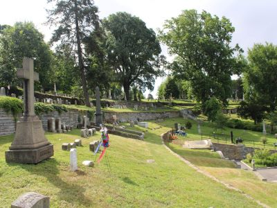
lachrimae72, CC0, via Wikimedia Commons; Image Size Adjusted

Laurel Hill East
Historic garden cemetery and arboretum offering scenic walking paths, Victorian monuments, and cultural programming in a tranquil riverside setting.

PVSBond at English Wikipedia, CC BY-SA 3.0, via Wikimedia Commons; Image Size Adjusted

Longwood Gardens
Botanical garden consisting of over 1,077 acres of gardens, woodlands, and meadows in the Brandywine Creek Valley
-400.jpg)
nakashi from Chofu, Tokyo, JAPAN, CC BY 2.0, via Wikimedia Commons; Image Size Adjusted
.jpg){kind=link}
Love Park
Public park nicknamed LOVE Park for its reproduction of Robert Indiana's 1970 LOVE sculpture which overlooks the plaza
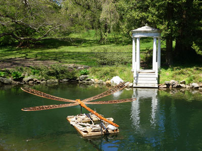
Daderot, CC0, via Wikimedia Commons; Image Size Adjusted

Morris Arboretum & Gardens
Official arboretum of Pennsylvania containing more than 13,000 plants of over 2,500 types, representing the temperate floras of North America, Asia, and Europe
Daderot, CC0, via Wikimedia Commons; Image Size Adjusted
Museum of the American Revolution
Interactive museum showcasing immersive exhibits, rare artifacts, personal stories, and historical documents that explore the events, ideals, and people that shaped the American Revolution and the founding of the United States.
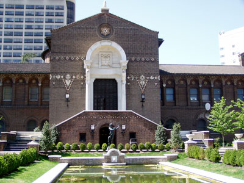
Jeffrey M. Vinocur, CC BY-SA 3.0, via Wikimedia Commons; Image Size Adjusted

Penn Museum
Archaeology and anthropology museum featuring materials from the ancient Mediterranean World, Egypt, the Near East, Mesopotamia, East Asia, and Mesoamerica

Acroterion, CC BY-SA 3.0, via Wikimedia Commons; Image Size Adjusted

Penns Landing
Waterfront area of Center City Philadelphia along the Delaware River
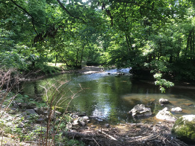
Dough4872, CC BY-SA 4.0, via Wikimedia Commons; Image Size Adjusted

Pennypack Park
Municipal park including about 1,600 acres of woodlands, meadows and wetlands with Pennypack Creek running through the park to the Delaware River

Peetlesnumber1, CC BY-SA 4.0, via Wikimedia Commons; Image Size Adjusted

Philadelphia City Hall
Seat of the municipal government of the City of Philadelphia, built of brick, white marble, and limestone, it is the world's largest free standing masonry building

DerekPhilipAu, CC BY-SA 4.0, via Wikimedia Commons; Image Size Adjusted

Philadelphia Museum of Art
Art museum including collections containing over 240,000 objects including major holdings of European, American and Asian origin
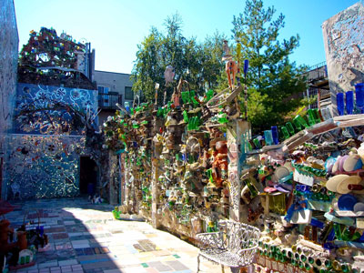
sashafatcat, CC BY 2.0, via Wikimedia Commons; Image Size Adjusted

Philadelphia's Magic Gardens
Folk art environment, and gallery space featuring mosaics made up of everything from kitchen tiles to bike wheels, Latin-American art to china plates

Fletcher6, CC BY-SA 3.0, via Wikimedia Commons; Image Size Adjusted

Reading Terminal Market
Enclosed public market with vendor stalls and over one hundred merchants offering fresh produce, baked goods, crafts, books, clothing, and specialty and ethnic foods
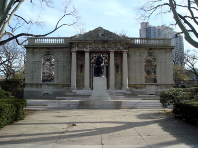
Bobak Ha'Eri, CC BY 3.0, via Wikimedia Commons; Image Size Adjusted

Rodin Museum
Museum contains one of the largest collections of sculptor Auguste Rodin's works outside Paris
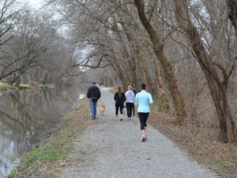
Montgomery County Planning Commission, CC BY-SA 2.0, via Wikimedia Commons; Image Size Adjusted

Schuylkill River Trail
Multi-use trail along the banks of the Schuylkill River in southeastern Pennsylvania
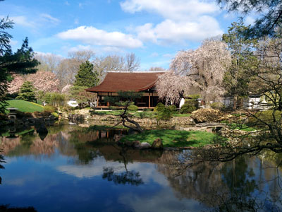
松風荘, CC BY-SA 4.0, via Wikimedia Commons; Image Size Adjusted

Shofuso Japanese House and Garden
Traditional 17th century-style Japanese house and garden located in Philadelphia's West Fairmount Park
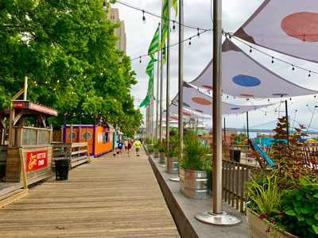
LittleT889, CC BY-SA 4.0, via Wikimedia Commons; Image Size Adjusted

Spruce Street Harbor Park
Urban beach located in Penn's Landing and open during the summer, the place features a boardwalk along the Delaware River
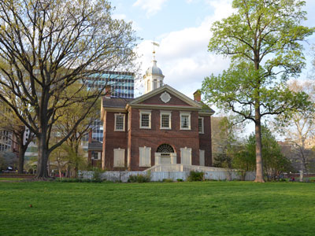
Roman Eugeniusz, CC BY-SA 3.0, via Wikimedia Commons; Image Size Adjusted

Washington Square
6.4 acres (2.6 ha) open-space park in Center City, Philadelphia, and one of the five original planned squares laid out on the city grid by William Penn's surveyor
Roman Eugeniusz, CC BY-SA 3.0, via Wikimedia Commons; Image Size Adjusted
Weitzman National Museum of American Jewish History
Museum dedicated to preserving and interpreting the history, culture, and contributions of Jewish communities in the United States through immersive exhibits, artifacts, and personal stories.
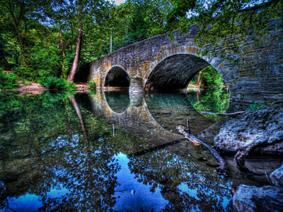
John Delacy, CC BY 3.0, via Wikimedia Commons; Image Size Adjusted
.jpeg){kind=link}
Wissahickon Valley Park
Park containing 2,042 acres (8.26 km2) of parkland in Northwest Philadelphia, including the Wissahickon Creek from its confluence with the Schuylkill River
Philadelphia is the largest city in Pennsylvania and the sixth-largest in the United States, with about 1.6 million residents. Founded in 1682 by the Quaker William Penn, it is famous as the birthplace of American independence, where the Declaration of Independence was adopted in 1776 and the Constitution was written in 1787. Independence Hall is a UNESCO World Heritage Site, and the city has 67 National Historic Landmarks. It is also known for the Liberty Bell, the Rocky Steps, cheesesteaks, soft pretzels, the Mummers Parade and passionate sports fans.
Visitors come to Philadelphia to walk through colonial history in Old City, see the Liberty Bell and Independence Hall, climb the steps of the Philadelphia Museum of Art, eat at Reading Terminal Market, view the city's famous murals and see a Phillies, Eagles, 76ers or Flyers game. The city is compact and walkable, with excellent museums, restaurants and neighborhoods, and it is easy to reach by Amtrak and SEPTA from New York and Washington. The city marks the 250th anniversary of the Declaration of Independence in 2026.
William Penn founded Philadelphia in 1682 as the capital of his Quaker colony of Pennsylvania, planning it on a grid with five public squares and the name "City of Brotherly Love." By the 1700s it was the largest city in British North America, home to Benjamin Franklin, the University of Pennsylvania (1740) and the Pennsylvania Hospital (1751). The Continental Congress met here, the Declaration of Independence was signed in 1776, and the Constitutional Convention drafted the Constitution in 1787. Philadelphia was the U.S. capital from 1790 to 1800. In the 19th century it became an industrial powerhouse, hosted the 1876 Centennial Exposition in Fairmount Park, and welcomed waves of immigrants. After manufacturing declined in the 20th century, the city reinvented itself around medicine, universities, culture and tourism.
Independence National Historical Park includes Independence Hall and the Liberty Bell, with Carpenters' Hall, the Betsy Ross House, Christ Church and the Christ Church Burial Ground, where Benjamin Franklin is buried, and the Museum of the American Revolution. Elfreth's Alley is the oldest continuously inhabited residential street in the country. City Hall, topped by a statue of William Penn, is one of the largest municipal buildings in the country. Other sights include LOVE Park, Eastern State Penitentiary, Philadelphia's Magic Gardens and Penn's Landing on the Delaware River.
The Philadelphia Museum of Art is one of the largest art museums in the country, and the Rodin Museum has one of the largest collections of Rodin's work outside Paris. The Penn Museum displays archaeology and anthropology, the African American Museum in Philadelphia and the Weitzman National Museum of American Jewish History tell important American stories, and the Franklin Institute, the Academy of Natural Sciences, the Mutter Museum, the Barnes Foundation and the Pennsylvania Academy of the Fine Arts add to the list. The Edgar Allan Poe National Historic Site preserves a house where the writer lived. Philadelphia has more public murals than any other American city, and the food scene includes cheesesteaks, hoagies, roast pork sandwiches, soft pretzels, water ice and Tastykakes.
Fairmount Park is one of the largest urban park systems in the country, with Boathouse Row, the Fairmount Water Works, the Shofuso Japanese House and Garden and the Philadelphia Zoo, the first zoo in the United States. Wissahickon Valley Park is a forested gorge with trails inside the city, and the Schuylkill River Trail follows the river for walking and biking. Washington Square, Spruce Street Harbor Park and Morris Arboretum are other favorites.
Philadelphia is one of a small number of U.S. cities with teams in all four major professional leagues. The Phillies (MLB) play at Citizens Bank Park and won the World Series in 1980 and 2008. The Eagles (NFL) play at Lincoln Financial Field and won the Super Bowl after the 2017 and 2024 seasons. The 76ers (NBA) and the Flyers (NHL), who won the Stanley Cup in 1974 and 1975, play in the South Philadelphia sports complex. The Philadelphia Union (MLS) play at Subaru Park in nearby Chester. The Big 5 college basketball rivalry among Villanova, Temple, Penn, La Salle and Saint Joseph's is a local tradition.
Philadelphia has a humid subtropical climate with four seasons. Summers are hot and humid, with highs in the upper 80s °F, and winters are cold, with highs in the 30s and 40s °F and occasional snow, with some years of heavy snowstorms. Spring and fall are the most pleasant seasons for walking the historic district. July 4 celebrations and the January 1 Mummers Parade are major events, and summer heat waves and winter storms can close attractions for a day or two.
This article uses material from the Wikipedia article "Philadelphia", which is released under the Creative Commons Attribution-Share-Alike License 3.0. Additional information from Visit Philadelphia, the National Park Service: Independence National Historical Park, the Philadelphia Museum of Art, Philadelphia Phillies, Philadelphia Eagles, National Weather Service Mount Holly and the official websites of the attractions and teams mentioned.
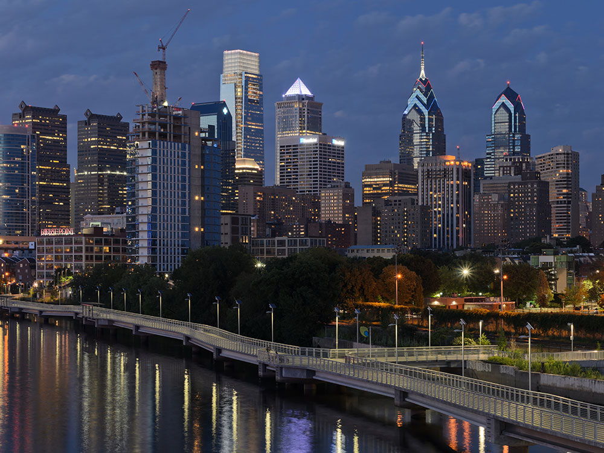

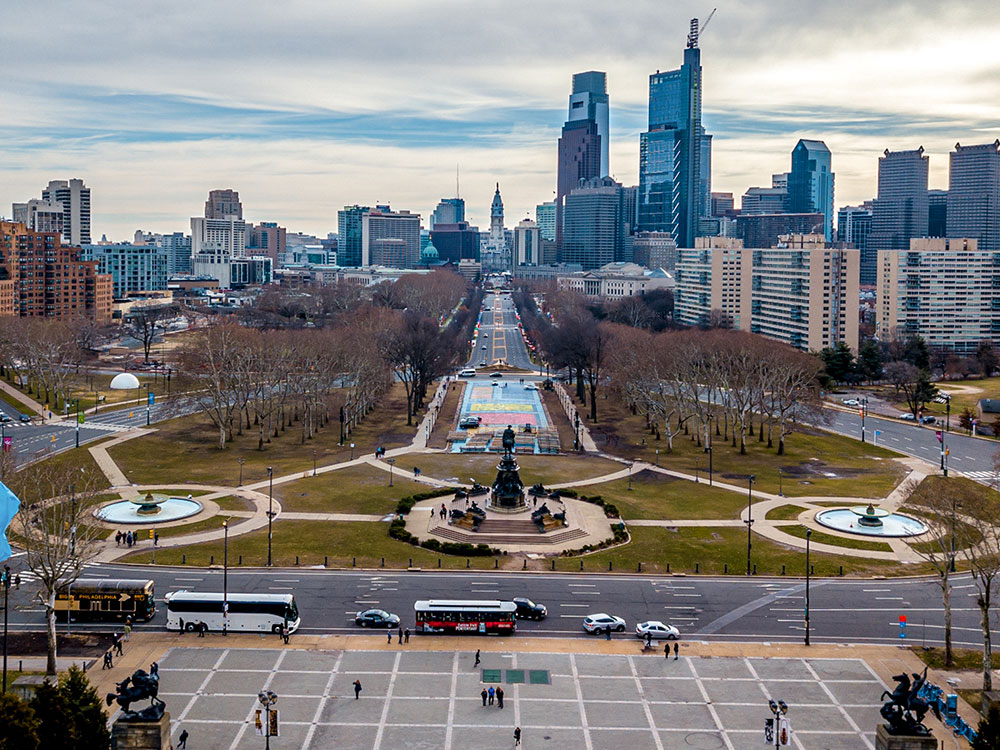

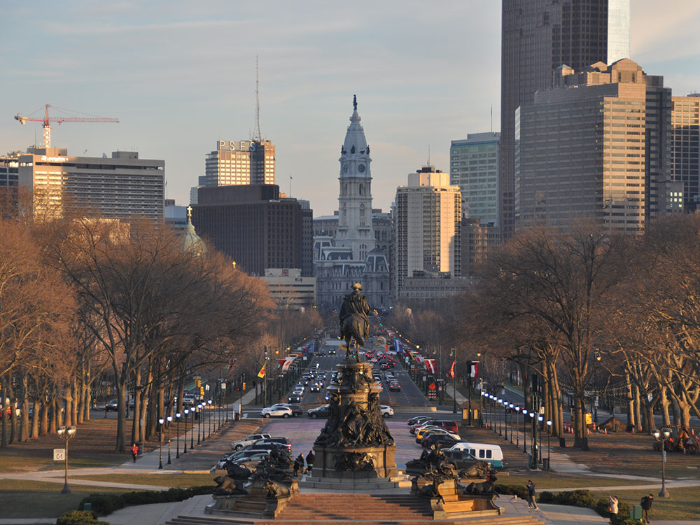

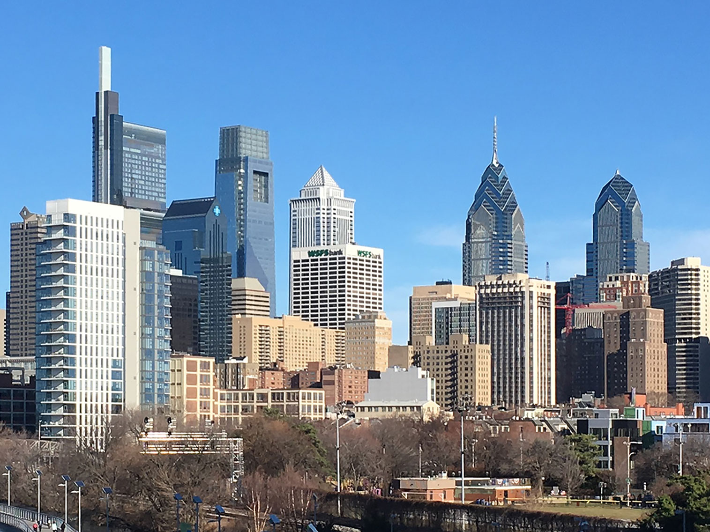